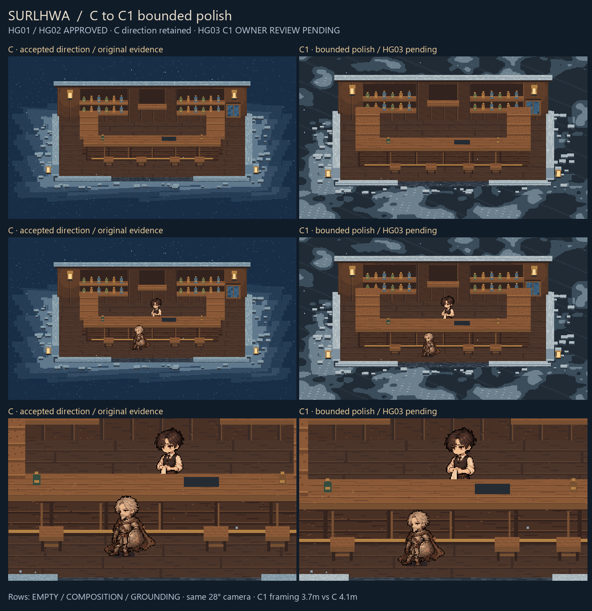

Empty
Native 1280×720 · Native 1920×1080


HG01 APPROVED · HG02 APPROVED · HG03 READY_FOR_OWNER_REVIEW. HG04 has not started.
C is the accepted Production camera/spatial direction: pixel-art first, selective depth second. A/B are REFERENCE_ONLY. C1 strengthens the U counter, quiets the winter ground, rebalances character scale and gives the bar more of the frame. It introduces no competing architecture.
C1 notes and reproduction · C versus C1 board · Original C native evidence · Historical A/B/C board

The board uses 50% nearest-neighbour thumbnails. All native originals remain separate and unchanged. Framing differs as requested; both use the same fixed 28° orthographic camera.
Native 1280×720 · Native 1920×1080
Native 1280×720 · Native 1920×1080

Native 1280×720 · Native 1920×1080

Native 1280×720 · Native 1920×1080

Native 1280×720 · Native 1920×1080

Native 1280×720 · Native 1920×1080

Deterministic pose replay, not final gameplay locomotion. Don Quixote remains VISUAL_FIXTURE_ONLY.
Native tests 63/63; evidence contracts 22/22. Fresh C1 process exited 0 with no Player errors or native allocation warnings. Twelve native stills and two 121-frame/12fps clips pass. Explicit offscreen 1080p sample: 60.01s, mean 0.68ms, P95 0.77ms, 1615 draws/frame, idle GC 0 bytes/frame.
Development/offscreen measurements do not establish GPU time, display latency or minimum hardware support. Snowfall marks remain static spatial fixtures. Final HG03 polish acceptance is the owner's decision.
The read-only technical review of implementation 5b80032 found no Critical or Important issue. One minor exception is documented: Unity-generated scene/mesh YAML has trailing whitespace; handwritten source checks pass. Automatic capture freshness checks compare executable identity; the complete source/Player inventory was verified separately by executor and reviewer.
Capture manifest · Source/Player identity · Progress and technical review record